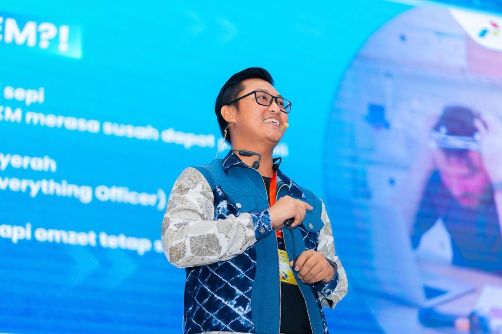
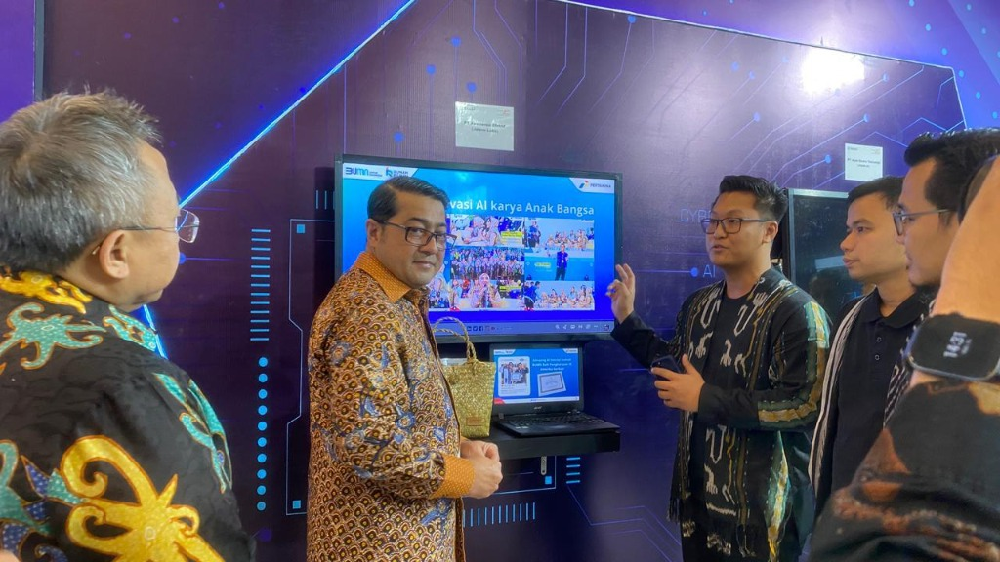
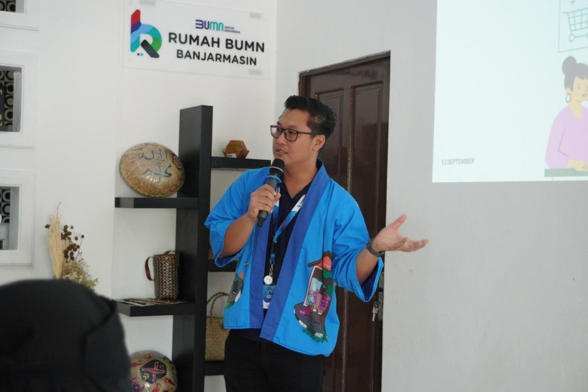
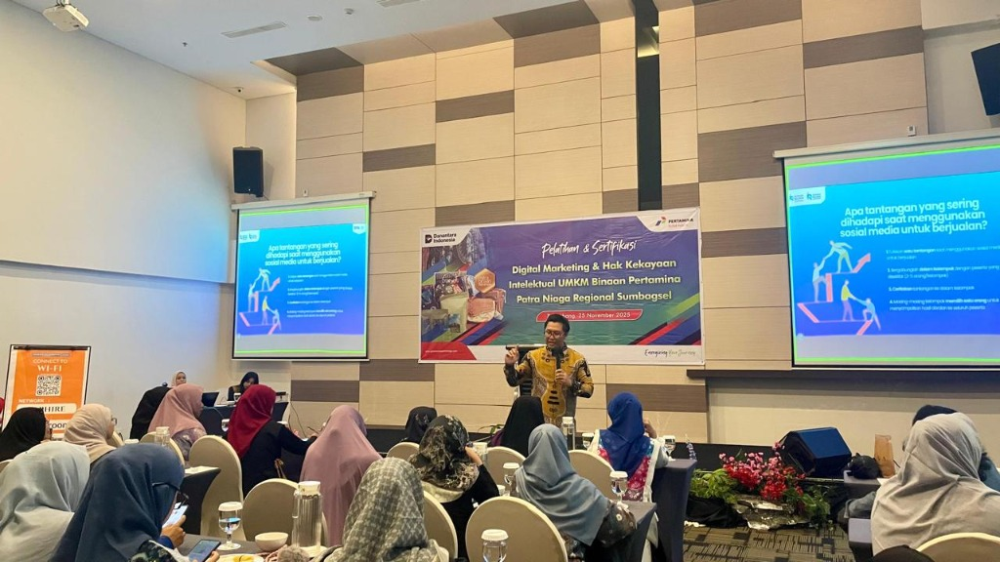
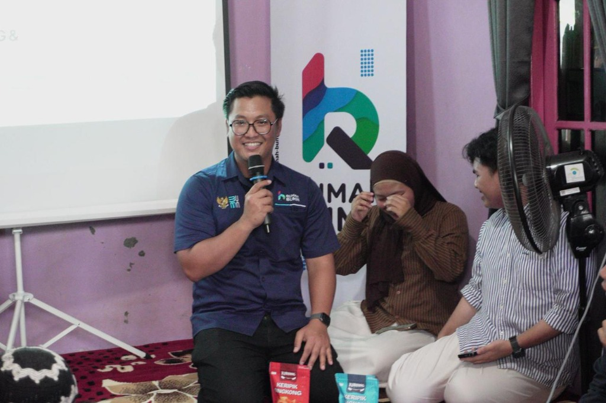
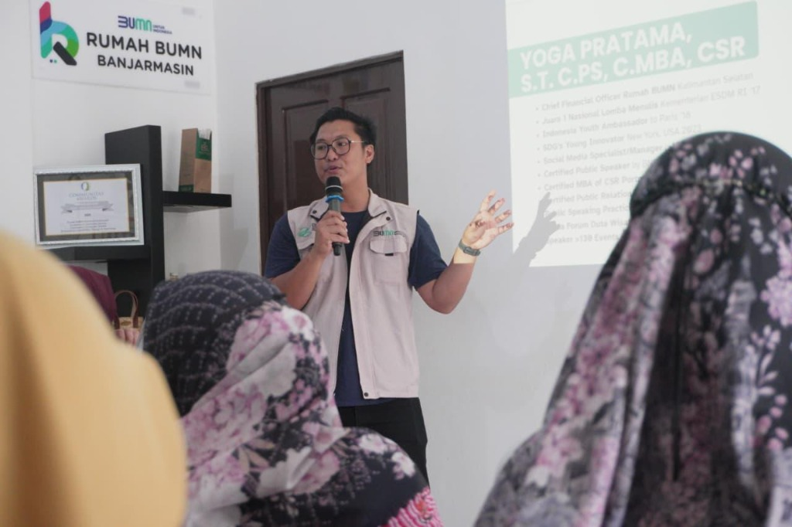
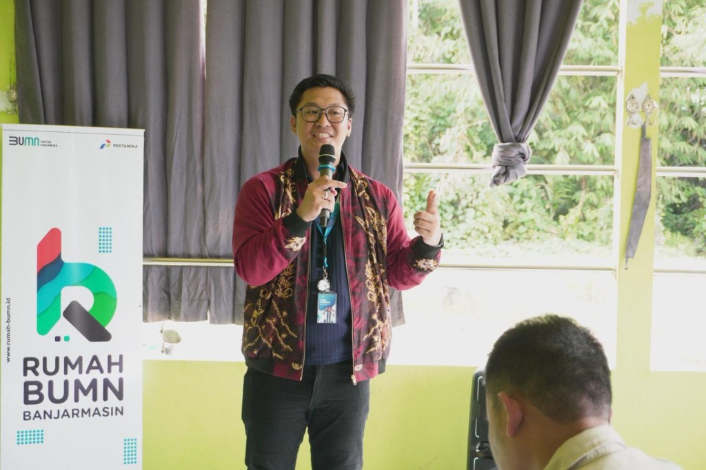
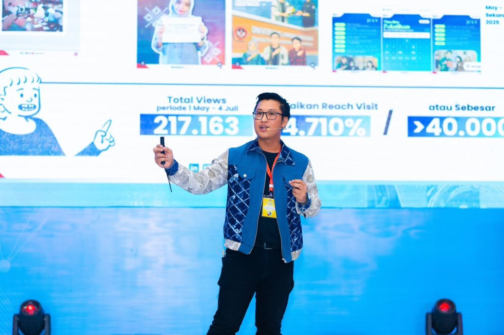

Gallery









Chief Financial Officer Rumah BUMN Banjarmasin & Professional Public Speaker with >300 events experience in Public Speaking, Branding, & Self Growth.
With over 10 years of experience in Public Communication and MSME Branding, I bridge the gap between financial strategy and persuasive storytelling.
My mission is to empower individuals and businesses to find their voice and build sustainable growth. As a Certified Public Speaker and CFO, I bring a unique blend of analytical thinking and creative expression.
Pemateri untuk seminar dan workshop topik Public Speaking, Branding UMKM, dan Media Sosial.
Konsultan strategi Branding & Public Speaking untuk personal maupun korporasi.
Pengelolaan dan analisis media sosial untuk pertumbuhan brand.